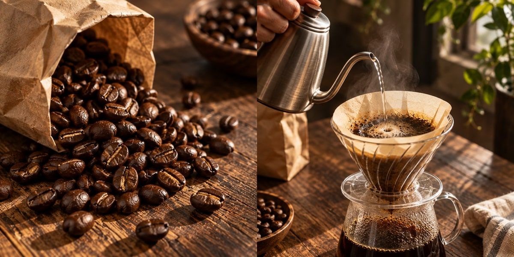
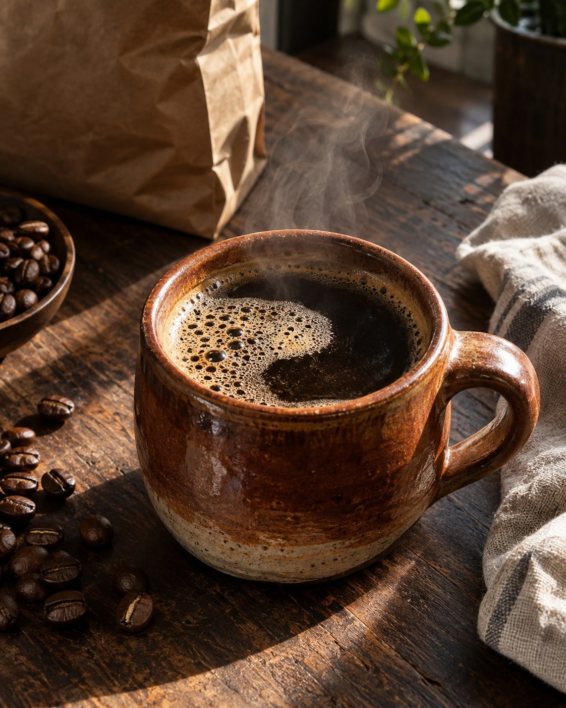
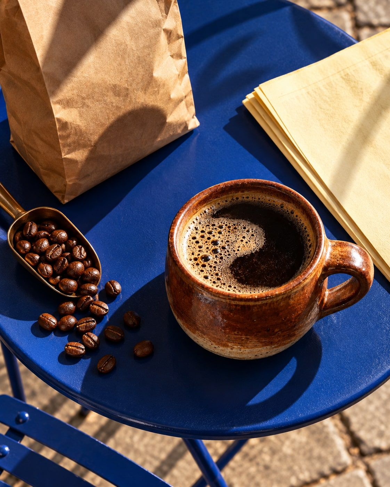

BREW NOTES
Je favoriete kop begint bij wat jij lekker vindt. Gebruik de aanwijzingen op je koffie als vertrekpunt.
Maalgraad, verhouding en zettijd geven ieder een andere kop. Verander één ding tegelijk en ontdek jouw voorkeur.
Begin bij de aanwijzingen op de verpakking.Proef je eerste kop.Pas één ding tegelijk aan.

Aandacht voor de handeling.

Een andere plek. Hetzelfde ritueel.